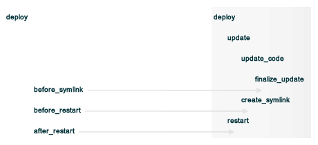
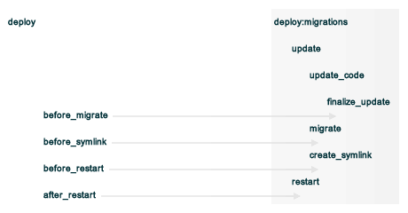

deploy¶
Use the deploy resource to manage and control deployments. This is a popular resource, but is also complex, having the most properties, multiple providers, the added complexity of callbacks, plus four attributes that support layout modifications from within a recipe.
The deploy resource is modeled after Capistrano, a utility and framework for executing commands in parallel on multiple remote machines via SSH. The deploy resource is designed to behave in a way that is similar to the deploy and deploy:migration tasks in Capistrano.
Syntax¶
A deploy resource block manages and controls deployments:
deploy 'private_repo' do
repo 'git@github.com:acctname/private-repo.git'
user 'ubuntu'
deploy_to '/tmp/private_code'
ssh_wrapper '/tmp/private_code/wrap-ssh4git.sh'
action :deploy
end
For example, an application that is deployed to a folder named "/path/to/application":
deploy_revision '/path/to/application' do
repo 'ssh://name-of-git-repo/repos/repo.git'
migrate false
purge_before_symlink %w{one two folder/three}
create_dirs_before_symlink []
symlinks{
"one" => "one",
"two" => "two",
"three" => "folder/three"
}
before_restart do
# some Ruby code
end
notifies :restart, 'service[foo]'
notifies :restart, 'service[bar]'
end
For the example shown above:
- Because an action is not explicitly specified, the chef-client will use the default action: :deploy
- The purge_before_symlink application layout is an array of paths that will be cleared before the symlinks property is run
- The create_dirs_before_symlink property is empty, which is different from the default
- The symlinks property is creating three symbolic links
- The before_restart callback is being used to add custom actions that will occur at the end of the deployment process, but before any services have been notified
- At the end, the recipe is using the notifies property—a common attribute available to all resources—to alert two services (named “foo” and “bar”) that they should restart.
The full syntax for all of the properties that are available to the deploy when used with git is:
deploy 'name' do
after_restart Proc, String
before_migrate Proc, String
before_restart Proc, String
before_symlink Proc, String
branch String
create_dirs_before_symlink Array
deploy_to String # defaults to 'name' if not specified
depth Integer
enable_submodules TrueClass, FalseClass
environment Hash
git_ssh_wrapper String
group String
keep_releases Integer
migrate TrueClass, FalseClass
migration_command String
notifies # see description
provider Chef::Provider::Deploy
purge_before_symlink Array
remote String
repo String
repository String
repository_cache String
restart_command Proc, String
revision String
rollback_on_error TrueClass, FalseClass
scm_provider Chef::Provider::Git
shallow_clone TrueClass, FalseClass
ssh_wrapper String
symlinks Hash
symlink_before_migrate Hash
timeout Integer
user String
action Symbol # defaults to :create if not specified
end
and the full syntax for all of the properties that are available to the deploy when used with Subversion is:
deploy 'name' do
after_restart Proc, String
before_migrate Proc, String
before_restart Proc, String
before_symlink Proc, String
branch String
create_dirs_before_symlink Array
deploy_to String # defaults to 'name' if not specified
environment Hash
group String
keep_releases Integer
migrate TrueClass, FalseClass
migration_command String
notifies # see description
provider Chef::Provider::Deploy
purge_before_symlink Array
repo String
repository String
repository_cache String
restart_command Proc, String
revision String
rollback_on_error TrueClass, FalseClass
scm_provider Chef::Provider::Subversion
subscribes # see description
svn_arguments String
svn_password String
svn_username String
symlinks Hash
symlink_before_migrate Hash
timeout Integer
user String
action Symbol # defaults to :create if not specified
end
where
- deploy is the resource
- name is the name of the resource block
- action identifies the steps the chef-client will take to bring the node into the desired state
- after_restart, before_migrate, before_restart, before_symlink, branch, create_dirs_before_symlink, deploy_to, depth, enable_submodules, environment, git_ssh_wrapper, group, keep_releases, migrate, migration_command, provider, purge_before_symlink, remote, repo, repository, repository_cache, restart_command, revision, rollback_on_error, scm_provider, shallow_clone, ssh_wrapper, svn_arguments, svn_password, svn_username, symlinks, symlink_before_migrate, timeout, and user are properties of this resource, with the Ruby type shown. See “Properties” section below for more information about all of the properties that may be used with this resource.
Deploy Strategies¶
In the deploy directory, a sub-directory named shared must be created. This sub-directory is where configuration and temporary files will be kept. A typical Ruby on Rails application will have config, log, pids, and system directories within the shared directory to keep the files stored there independent of the code in the source repository.
In addition to the shared sub-directory, the deploy process will create sub-directories named releases and current (also in the deploy directory). The release directory holds (up to) five most recently deployed versions of an application. The current directory holds the currently-released version.
For example:
deploy_directory/
current/
releases/
shared/
config/
log/
pids/
system/
Deploy Phases¶
A deployment happens in four phases:
- Checkout—the chef-client uses the scm resource to get the specified application revision, placing a clone or checkout in the sub-directory of the deploy directory named cached-copy. A copy of the application is then placed in a sub-directory under releases.
- Migrate—If a migration is to be run, the chef-client symlinks the database configuration file into the checkout (config/database.yml by default) and runs the migration command. For a Ruby on Rails application, the migration_command is usually set to rake db:migrate.
- Symlink—Directories for shared and temporary files are removed from the checkout (log, tmp/pids, and public/system by default). After this step, any needed directories (tmp, public, and config by default) are created if they don’t already exist. This step is completed by symlinking shared directories into the current release, public/system, tmp/pids, and log directories, and then symlinking the release directory to current.
- Restart—The application is restarted according to the restart command set in the recipe.
Deploy Cache File¶
The chef-client uses a cache file to keep track of the order in which each revision of an application is deployed. By default, the cache file is located at /var/chef/cache/revision-deploys/APPNAME/. To force a re-deploy, delete the deployment directory or delete the cache file.
Callbacks¶
In-between each step in a deployment process, callbacks can be run using arbitrary Ruby code, including recipes. All callbacks support embedded recipes given in a block, but each callback assumes a shell command (instead of a deploy hook filename) when given a string.
The following callback types are available:
| Callback | Description |
|---|---|
| after_restart | A block of code, or a path to a file that contains code, that is run after restarting. Default value: deploy/after_restart.rb. |
| before_migrate | A block of code, or a path to a file that contains code, that is run before a migration. Default value: deploy/before_migrate.rb. |
| before_restart | A block of code, or a path to a file that contains code, that is run before restarting. Default value: deploy/before_restart.rb. |
| before_symlink | A block of code, or a path to a file that contains code, that is run before symbolic linking. Default value: deploy/before_symlink.rb. |
Each of these callback types can be used in one of three ways:
- To pass a block of code, such as Ruby or Python
- To specify a file
- To do neither; the chef-client will look for a callback file named after one of the callback types (before_migrate.rb, for example) and if the file exists, to evaluate it as if it were a specified file
Within a callback, there are two ways to get access to information about the deployment:
- release_path can be used to get the path to the current release
- new_resource can be used to access the deploy resource, including environment variables that have been set there (using new_resource is a preferred approach over using the @configuration variable)
Both of these options must be available at the top-level within the callback, along with any assigned values that will be used later in the callback.
Callbacks and Capistrano
If you are familiar with Capistrano, the following examples should help you know when to use the various callbacks that are available. If you are not familiar with Capistrano, then follow the semantic names of these callbacks to help you determine when to use each of the callbacks within a recipe that is built with the deploy resource.
The following example shows where callbacks fit in relation to the steps taken by the deploy process in Capistrano:
and the following example shows the same comparison, but with the deploy:migrations process:
Layout Modifiers¶
The deploy resource expects an application to be structured like a Ruby on Rails application, but the layout can be modified to meet custom requirements as needed. Use the following attributes within a recipe to modify the layout of a recipe that is using the deploy resource:
| Layout Modifiers | Description |
|---|---|
| create_dirs_before_symlink | Create directories in the release directory before symbolic links are created. This property runs after purge_before_symlink and before symlink. |
| purge_before_symlink | An array of directories (relative to the application root) to be removed from a checkout before symbolic links are created. This attribute runs before create_dirs_before_symlink and before symlink. |
| symlink_before_migrate | Map files in a shared directory to the current release directory. The symbolic links for these files are created before any migration is run. Use parentheses ( ) around curly braces { } to ensure the contents within the curly braces are interpreted as a block and not as an empty Hash. Set to symlink_before_migrate({}) to prevent the creation of symbolic links. |
| symlinks | Map files in a shared directory to their paths in the current release directory. This property runs after create_dirs_before_symlink and purge_before_symlink. |
Actions¶
This resource has the following actions:
- :deploy
- Default. Deploy an application.
- :force_deploy
- Remove any existing release of the same code version and re-deploy a new one in its place.
- :nothing
- Define this resource block to do nothing until notified by another resource to take action. When this resource is notified, this resource block is either run immediately or it is queued up to be run at the end of the chef-client run.
- :rollback
- Roll an application back to the previous release.
Naming Resources¶
The chef-client caches deployment actions as they are taken. In order for the chef-client to be able to apply a subsequent deployment action—rolling back a release using the :rollback action, for example—all related deployment actions must be contained within resource blocks that have the same name. This ensures that the chef-client will be able to find the correct deployment from within the cached deployment actions.
For example, a simple deployment:
deploy_revision 'name' do
...
action :deploy
end
In order to use the :rollback action with this deployment, the :rollback action must be in a resource block that has the same resource name as the initial deploy action. For example:
deploy_revision 'name' do
...
action :rollback
end
Properties¶
This resource has the following properties:
- after_restart
Ruby Types: Proc, String
A block of code, or a path to a file that contains code, that is run after restarting. Default value: deploy/after_restart.rb.
- before_migrate
Ruby Types: Proc, String
A block of code, or a path to a file that contains code, that is run before a migration. Default value: deploy/before_migrate.rb.
- before_restart
Ruby Types: Proc, String
A block of code, or a path to a file that contains code, that is run before restarting. Default value: deploy/before_restart.rb.
- before_symlink
Ruby Types: Proc, String
A block of code, or a path to a file that contains code, that is run before symbolic linking. Default value: deploy/before_symlink.rb.
- branch
Ruby Type: String
The alias for the revision.
- create_dirs_before_symlink
Ruby Type: Array
Create directories in the release directory before symbolic links are created. This property runs after purge_before_symlink and before symlink. Default value: %w{tmp public config} (or the same as ["tmp", "public", "config"]).
- deploy_to
Ruby Type: String
The “meta root” for the application, if different from the path that is used to specify the name of a resource. Default value: the name of the resource block See “Syntax” section above for more information.
- environment
Ruby Type: Hash
A Hash of environment variables in the form of ({"ENV_VARIABLE" => "VALUE"}). (These variables must exist for a command to be run successfully.)
- group
Ruby Type: String
The system group that is responsible for the checked-out code.
- ignore_failure
Ruby Types: TrueClass, FalseClass
Continue running a recipe if a resource fails for any reason. Default value: false.
- keep_releases
Ruby Type: Integer
The number of releases for which a backup is kept. Default value: 5.
- migrate
Ruby Types: TrueClass, FalseClass
Run a migration command. Default value: false.
- migration_command
Ruby Type: String
A string that contains a shell command that can be executed to run a migration operation.
- notifies
Ruby Type: Symbol, ‘Chef::Resource[String]’
A resource may notify another resource to take action when its state changes. Specify a 'resource[name]', the :action that resource should take, and then the :timer for that action. A resource may notifiy more than one resource; use a notifies statement for each resource to be notified.
A timer specifies the point during the chef-client run at which a notification is run. The following timers are available:
- :before
- Specifies that the action on a notified resource should be run before processing the resource block in which the notification is located.
- :delayed
- Default. Specifies that a notification should be queued up, and then executed at the very end of the chef-client run.
- :immediate, :immediately
- Specifies that a notification should be run immediately, per resource notified.
The syntax for notifies is:
notifies :action, 'resource[name]', :timer
- provider
Ruby Type: Chef Class
Optional. Explicitly specifies a provider. See “Providers” section below for more information.
- purge_before_symlink
Ruby Type: Array
An array of directories (relative to the application root) to be removed from a checkout before symbolic links are created. This attribute runs before create_dirs_before_symlink and before symlink. Default value: %w{log tmp/pids public/system} (or the same as ["log", "tmp/pids", "public/system"].
- repo
Ruby Type: String
The alias for the repository.
- repository
Ruby Type: String
The URI for the repository.
- repository_cache
Ruby Type: String
The name of the sub-directory in which the pristine copy of an application’s source is kept. Default value: cached-copy.
- restart_command
Ruby Types: String, Proc
A string that contains a shell command that can be executed to run a restart operation.
- retries
Ruby Type: Integer
The number of times to catch exceptions and retry the resource. Default value: 0.
- retry_delay
Ruby Type: Integer
The retry delay (in seconds). Default value: 2.
- revision
Ruby Type: String
A branch, tag, or commit to be synchronized with git. This can be symbolic, like HEAD or it can be a source control management-specific revision identifier. Default value: HEAD.
- rollback_on_error
Ruby Types: TrueClass, FalseClass
Roll a resource back to a previously-deployed release if an error occurs when deploying a new release. Default value: false.
- scm_provider
Ruby Type: Chef Class
The name of the source control management provider. Default value: Chef::Provider::Git. Optional values: Chef::Provider::Subversion.
- subscribes
Ruby Type: Symbol, ‘Chef::Resource[String]’
A resource may listen to another resource, and then take action if the state of the resource being listened to changes. Specify a 'resource[name]', the :action to be taken, and then the :timer for that action.
A timer specifies the point during the chef-client run at which a notification is run. The following timers are available:
- :before
- Specifies that the action on a notified resource should be run before processing the resource block in which the notification is located.
- :delayed
- Default. Specifies that a notification should be queued up, and then executed at the very end of the chef-client run.
- :immediate, :immediately
- Specifies that a notification should be run immediately, per resource notified.
The syntax for subscribes is:
subscribes :action, 'resource[name]', :timer
- symlinks
Ruby Type: Hash
Map files in a shared directory to their paths in the current release directory. This property runs after create_dirs_before_symlink and purge_before_symlink. Default value: {"system" => "public/system", "pids" => "tmp/pids", "log" => "log"}.
- symlink_before_migrate
Ruby Type: Hash
Map files in a shared directory to the current release directory. The symbolic links for these files are created before any migration is run. Use parentheses ( ) around curly braces { } to ensure the contents within the curly braces are interpreted as a block and not as an empty Hash. Set to symlink_before_migrate({}) to prevent the creation of symbolic links. Default value: {"config/database.yml" => "config/database.yml"}.
- timeout
Ruby Type: Integer
The amount of time (in seconds) to wait for a command to execute before timing out. When specified, this value is passed from the deploy resource to the git or subversion resources.
- user
Ruby Type: String
The system user that is responsible for the checked-out code.
The following properties are for use with git only:
- depth
Ruby Type: Integer
The depth of a git repository, truncated to the specified number of revisions. See shallow_clone.
- enable_submodules
Ruby Types: TrueClass, FalseClass
Perform a sub-module initialization and update. Default value: false.
- git_ssh_wrapper
Ruby Type: String
The alias for the ssh_wrapper.
- remote
Ruby Type: String
The remote repository to use when synchronizing an existing clone. Default value: origin.
- shallow_clone
Ruby Types: TrueClass, FalseClass
Set the clone depth to 5. If a depth other than 5 is required, use the depth property instead of shallow_clone. Default value: false.
- ssh_wrapper
Ruby Type: String
The path to the wrapper script used when running SSH with git. The GIT_SSH environment variable is set to this.
The following properties are for use with Subversion only:
- svn_arguments
Ruby Type: String
The extra arguments that are passed to the Subversion command.
- svn_password
Ruby Type: String
The password for a user that has access to the Subversion repository.
- svn_username
Ruby Type: String
The user name for a user that has access to the Subversion repository.
Providers¶
Where a resource represents a piece of the system (and its desired state), a provider defines the steps that are needed to bring that piece of the system from its current state into the desired state.
The chef-client will determine the correct provider based on configuration data collected by Ohai at the start of the chef-client run. This configuration data is then mapped to a platform and an associated list of providers.
Generally, it’s best to let the chef-client choose the provider, and this is (by far) the most common approach. However, in some cases, specifying a provider may be desirable. There are two approaches:
- Use a more specific short name—yum_package "foo" do instead of package "foo" do, script "foo" do instead of bash "foo" do, and so on—when available
- Use the provider property within the resource block to specify the long name of the provider as a property of a resource. For example: provider Chef::Provider::Long::Name
This resource has the following providers:
- Chef::Provider::Deploy, deploy
- When this short name is used, the chef-client will determine the correct provider during the chef-client run.
- Chef::Provider::Deploy::Branch, deploy_branch
- See below for more information.
- Chef::Provider::Deploy::Revision, deploy_revision
- See below for more information.
- Chef::Provider::Deploy::TimestampedDeploy, timestamped_deploy
- The default provider for all platforms. See below for more information.
deploy_branch¶
The deploy_branch resource functions identically to the deploy_revision resource, in terms of how the chef-client processes the resource during the chef-client run. It uses the same Deploy::Revision provider, the same set of actions and attributes, and is (outside of the name itself) identical to the deploy_revision resource. Using the deploy_revision resource is preferred; however, the deploy_branch resource exists for those situations where, semantically, it is preferable to refer to a resource as a “branch” instead of a “revision”.
deploy_revision¶
The deploy_revision provider is the recommended provider, even if it is not listed as the default. The deploy_revision provider is used to ensure that the name of a release sub-directory is based on a revision identifier. For users of git, this will be the familiar SHA checksum. For users of Subversion, it will be the integer revision number. If a name other than a revision identifier is provided—branch names, tags, and so on—the chef-client will ignore the alternate names and will look up the revision identifier and use it to name the release sub-directory. When the deploy_revision provider is given an exact revision to deploy, it will behave in an idempotent manner.
The deploy_revision provider results in deployed components under the destination location that is owned by the user who runs the application. This is sometimes an issue for certain workflows. If issues arise, consider the following:
- Incorporate changing permissions to the desired end state from within a recipe
- Add a before_restart block to fix up the permissions
- Have an unprivileged user (for example: opscode) be the owner of the deploy directory and another unprivileged user (for example: opscodeapp) run the application. Most often, this is the solution that works best
When using the deploy_revision provider, and when the deploy fails for any reason, and when the same code is used to re-deploy, the action should be set manually to :force_deploy. Forcing the re-deploy will remove the old release directory, after which the deploy can proceed as usual. (Forcing a re-deploy over the current release can cause some downtime.) Deployed revisions are stored in (file_cache_path)/revision-deploys/(deploy_path).
timestamped_deploy¶
The timestamped_deploy provider is the default deploy provider. It is used to name release directories with a timestamp in the form of YYYYMMDDHHMMSS. For example: /my/deploy/dir/releases/20121120162342. The deploy resource will determine whether or not to deploy code based on the existence of the release directory in which it is attempting to deploy. Because the timestamp is different for every chef-client run, the timestamped_deploy provider is not idempotent. When the timestamped_deploy provider is used, it requires that the action setting on a resource be managed manually in order to prevent unintended continuous deployment.
Examples¶
The following examples demonstrate various approaches for using resources in recipes. If you want to see examples of how Chef uses resources in recipes, take a closer look at the cookbooks that Chef authors and maintains: https://github.com/chef-cookbooks.
Modify the layout of a Ruby on Rails application
The layout of the deploy resource matches a Ruby on Rails app by default, but this can be customized. To customize the layout, do something like the following:
deploy '/my/apps/dir/deploy' do
# Use a local repo if you prefer
repo '/path/to/gitrepo/typo/'
environment 'RAILS_ENV' => 'production'
revision 'HEAD'
action :deploy
migration_command 'rake db:migrate --trace'
migrate true
restart_command 'touch tmp/restart.txt'
create_dirs_before_symlink %w{tmp public config deploy}
# You can use this to customize if your app has extra configuration files
# such as amqp.yml or app_config.yml
symlink_before_migrate 'config/database.yml' => 'config/database.yml'
# If your app has extra files in the shared folder, specify them here
symlinks 'system' => 'public/system',
'pids' => 'tmp/pids',
'log' => 'log',
'deploy/before_migrate.rb' => 'deploy/before_migrate.rb',
'deploy/before_symlink.rb' => 'deploy/before_symlink.rb',
'deploy/before_restart.rb' => 'deploy/before_restart.rb',
'deploy/after_restart.rb' => 'deploy/after_restart.rb'
end
Use resources within callbacks
Using resources from within your callbacks as blocks or within callback files distributed with your application’s source code. To use embedded recipes for callbacks:
deploy "#{node['tmpdir']}/deploy" do
repo "#{node['tmpdir']}/gitrepo/typo/"
environment 'RAILS_ENV' => 'production'
revision 'HEAD'
action :deploy
migration_command 'rake db:migrate --trace'
migrate true
# Callback awesomeness:
before_migrate do
current_release = release_path
directory "#{current_release}/deploy" do
mode '0755'
end
# creates a callback for before_symlink
template "#{current_release}/deploy/before_symlink_callback.rb" do
source 'embedded_recipe_before_symlink.rb.erb'
mode '0755'
end
end
# This file can contain Chef recipe code, plain ruby also works
before_symlink 'deploy/before_symlink_callback.rb'
restart do
current_release = release_path
file "#{release_path}/tmp/restart.txt" do
mode '0755'
end
end
end
Deploy from a private git repository without using the application cookbook
To deploy from a private git repository without using the application cookbook, first ensure that:
- the private key does not have a passphrase, as this will pause a chef-client run to wait for input
- an SSH wrapper is being used
- a private key has been added to the node
and then remove a passphrase from a private key by using code similar to:
ssh-keygen -p -P 'PASSPHRASE' -N '' -f id_deploy
Use an SSH wrapper
To write a recipe that uses an SSH wrapper:
Create a file in the cookbooks/COOKBOOK_NAME/files/default directory that is named wrap-ssh4git.sh and which contains the following:
#!/usr/bin/env bash /usr/bin/env ssh -o "StrictHostKeyChecking=no" -i "/tmp/private_code/.ssh/id_deploy" $1 $2
Set up the cookbook file.
Add a recipe to the cookbook file similar to the following:
directory '/tmp/private_code/.ssh' do owner 'ubuntu' recursive true end cookbook_file '/tmp/private_code/wrap-ssh4git.sh' do source 'wrap-ssh4git.sh' owner 'ubuntu' mode '0755' end deploy 'private_repo' do repo 'git@github.com:acctname/private-repo.git' user 'ubuntu' deploy_to '/tmp/private_code' action :deploy ssh_wrapper '/tmp/private_code/wrap-ssh4git.sh' end
This will deploy the git repository at git@github.com:acctname/private-repo.git in the /tmp/private_code directory.
Use a callback to include a file that will be passed as a code block
The code in a file that is included in a recipe using a callback is evaluated exactly as if the code had been put in the recipe as a block. Files are searched relative to the current release.
To specify a file that contains code to be used as a block:
deploy '/deploy/dir/' do
# ...
before_migrate 'callbacks/do_this_before_migrate.rb'
end
Use a callback to pass a code block
To pass a block of Python code before a migration is run:
deploy_revision '/deploy/dir/' do
# other attributes
# ...
before_migrate do
# release_path is the path to the timestamp dir
# for the current release
current_release = release_path
# Create a local variable for the node so we'll have access to
# the attributes
deploy_node = node
# A local variable with the deploy resource.
deploy_resource = new_resource
python do
cwd current_release
user 'myappuser'
code<<-PYCODE
# Woah, callbacks in python!
# ...
# current_release, deploy_node, and deploy_resource are all available
# within the deploy hook now.
PYCODE
end
end
end
Use the same API for all recipes using the same gem
Any recipes using the git-deploy gem can continue using the same API. To include this behavior in a recipe, do something like the following:
deploy "/srv/#{appname}" do
repo 'git://github.com/radiant/radiant.git'
revision 'HEAD'
user 'railsdev'
enable_submodules false
migrate true
migration_command 'rake db:migrate'
# Giving a string for environment sets RAILS_ENV, MERB_ENV, RACK_ENV
environment 'production'
shallow_clone true
action :deploy
restart_command 'touch tmp/restart.txt'
end
Deploy without creating symbolic links to a shared folder
To deploy without creating symbolic links to a shared folder:
deploy '/my/apps/dir/deploy' do
symlinks {}
end
When deploying code that is not Ruby on Rails and symbolic links to a shared folder are not wanted, use parentheses () or Hash.new to avoid ambiguity. For example, using parentheses:
deploy '/my/apps/dir/deploy' do
symlinks({})
end
or using Hash.new:
deploy '/my/apps/dir/deploy' do
symlinks Hash.new
end
Clear a layout modifier attribute
Using the default property values for the various resources is the recommended starting point when working with recipes. Then, depending on what each node requires, these default values can be overridden with node-, role-, environment-, and cookbook-specific values. The deploy resource has four layout modifiers: create_dirs_before_symlink, purge_before_symlink, symlink_before_migrate, and symlinks. Each of these is a Hash that behaves as a property of the deploy resource. When these layout modifiers are used in a recipe, they appear similar to the following:
deploy 'name' do
...
symlink_before_migrate {'config/database.yml' => 'config/database.yml'}
create_dirs_before_symlink %w{tmp public config}
purge_before_symlink %w{log tmp/pids public/system}
symlinks { 'system' => 'public/system',
'pids' => 'tmp/pids',
'log' => 'log'
}
...
end
and then what these layout modifiers look like if they were empty:
deploy 'name' do
...
symlink_before_migrate nil
create_dirs_before_symlink []
purge_before_symlink []
symlinks nil
...
end
In most cases, using the empty values for the layout modifiers will prevent the chef-client from passing symbolic linking information to a node during the chef-client run. However, in some cases, it may be preferable to ensure that one (or more) of these layout modifiers do not pass any symbolic linking information to a node during the chef-client run at all. Because each of these layout modifiers are a Hash, the clear instance method can be used to clear out these values.
To clear the default values for a layout modifier:
deploy 'name' do
...
symlink_before_migrate.clear
create_dirs_before_symlink.clear
purge_before_symlink.clear
symlinks.clear
...
end
In general, use this approach carefully and only after it is determined that nil or empty values won’t provide the expected result.